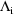
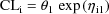
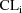
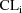
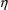
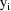
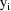
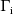
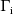
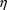

’s "zeroed".)) This defines a type of
hierarchy to the methods.
’s "zeroed".)) This defines a type of
hierarchy to the methods.Many data sets (real and simulated) have been examined using the first-order (FO) estimation method and, more recently, the conditional estimation methods. With many population pharmacokinetic data sets, the FO method works fairly well. It requires far less CPU time than does a conditional estimation method. However, from the time of its earliest usage there has been a small number of examples where the method has not worked adequately. Evidence suggesting that the method may not be adequate with a particular data set can be readily obtained with the goodness-of-fit scatterplot: with mean-variance intraindividual models, a plot of observations versus (population) predictions. Consider two such scatterplots in Figures 1 and 2. The one in Figure 1, resulting from use of the FO method, shows a clear bias in the fit. The data result from single oral bolus doses being given to a number of subjects; the data are modeled with a two compartment linear model with first-order absorption from a drug depot. The scatterplot in Figure 2 results from use of the FOCE method without interaction. Much of the bias is eliminated with the use of this method. In this situation, the benefit from the extra expenditure of computer time that is needed with the method is substantial.
The Laplacian method can use considerably more computer time than the FOCE method, depending on the complexity of the computations for obtaining needed second derivatives. In this example, the extra expenditure of computer time needed with the Laplacian method is not much, but the benefit is also not much. The scatterplot resulting from using the Laplacian method is very similar to that of Figure 2.
The Laplacian method should
perform no worse than the FOCE method (the former avoids the
first-order approximation). The FOCE method should perform
no worse than the FO method (the adaquacy of the first-order
approximation is better when the

are evaluated at the conditional estimates, rather than at
0). Similarly, the hybrid method should also perform no
worse than the FO method, but perhaps not as well as the
FOCE method. (See e.g. Figure 3, which is the
goodness-of-fit plot for the same data described above,
using the hybrid method (with two out of four
’s "zeroed".)) This defines a type of
hierarchy to the methods.
The need to proceed up the
hierarchy from the FO method increases as the degree to
which the intraindividual models are nonlinear in the
 increases. The need to use the Laplacian method increases
because as the degree of nonlinearity increases, the
adequacy of the first-order approximation decreases. The
need to use the FOCE method increases because as the degree
of nonlinearity increases, the adequacy of the first-order
approximation depends more on the values at which the
are evaluated.
increases. The need to use the Laplacian method increases
because as the degree of nonlinearity increases, the
adequacy of the first-order approximation decreases. The
need to use the FOCE method increases because as the degree
of nonlinearity increases, the adequacy of the first-order
approximation depends more on the values at which the
are evaluated.
Population (structurally) linear pharmacokinetic models are often rather linear (as just defined), although the degree of nonlinearity increases with the degree of multiple dosing. With these models the Laplacian method is rarely, if ever, needed. With simple bolus dosing, the FOCE method is often not needed, although the example cited above serves as a reminder not to interpret this last assertion too optimistically. On the other hand, population nonlinear pharmacokinetic models (e.g. models with Michaelis-Menten elimination) can be quite nonlinear. Population pharmacodynamic models also can be quite nonlinear, and especially with models for categorical- and discrete-ordinal-type observations, the Laplacian method is invariably the best choice.
The ability of a conditional
estimation method to produce results different from those
obtained with the FO method decreases as the degree of
random interindividual variablity, i.e. "the size"
of
 decreases. This is because the conditional methods use
conditional estimates of the
decreases. This is because the conditional methods use
conditional estimates of the
 , which are all shrunken to 0, and the shrinkage is greater
the smaller the size of
, which are all shrunken to 0, and the shrinkage is greater
the smaller the size of
 . The value 0 is the value used for the
. The value 0 is the value used for the
 with the FO method. Similarly, the ability of FOCE to
produce results different from those obtained with the
hybrid method decreases as the degree of random
interindividual variablity, i.e. "the size" of
with the FO method. Similarly, the ability of FOCE to
produce results different from those obtained with the
hybrid method decreases as the degree of random
interindividual variablity, i.e. "the size" of
 decreases. In fact, suppose one tries to use the FOCE method
and finds that some estimates of interindividual variances
are rather large compared to others. Then using the hybrid
method where those elements of
with small variance are "zeroed", may well result
in a fit about as good as that using FOCE (in contrast to
that shown in Figure 3), and if the number of elements of
decreases. In fact, suppose one tries to use the FOCE method
and finds that some estimates of interindividual variances
are rather large compared to others. Then using the hybrid
method where those elements of
with small variance are "zeroed", may well result
in a fit about as good as that using FOCE (in contrast to
that shown in Figure 3), and if the number of elements of
 that are zeroed is large relative to the total number of
elements, CPU time may be significantly reduced.
that are zeroed is large relative to the total number of
elements, CPU time may be significantly reduced.
The ability of a conditional
estimation method to produce results different from those
obtained with the FO method decreases as the amount of data
per individual decreases. This is because the conditional
methods use conditional estimates of the
 , which are all shrunken to 0, and the shrinkage is greater
the less the amount of data per individual. Actually, the
amount of data from the ith individual should be measured
relative to the number of parameters in the model for the
individual, i.e. the number of elements of
, which are all shrunken to 0, and the shrinkage is greater
the less the amount of data per individual. Actually, the
amount of data from the ith individual should be measured
relative to the number of parameters in the model for the
individual, i.e. the number of elements of
 upon which the model really depends. As the number of
parameters increases, the amount of data decreases, and can
"approach 0". Also, strictly speaking, the amount
of data might be understood as being relative to the
"data design" (the poorer the design, the less
useful the data) and the magnitude of intraindividual error
(the more error, the less useful the data).
upon which the model really depends. As the number of
parameters increases, the amount of data decreases, and can
"approach 0". Also, strictly speaking, the amount
of data might be understood as being relative to the
"data design" (the poorer the design, the less
useful the data) and the magnitude of intraindividual error
(the more error, the less useful the data).
With intraindividual mean-variance models where it may appear theoretically plausible that there is an -interaction, it might seem more appropriate to use the FOCE method with interaction than to use the FOCE method without interaction. However, when the amount of (true) intraindividual variance is large (though the intraindividual models may be structurally well-specified), or the amount of data per individual is small, it will be difficult for the data to support an interaction, in which case the FOCE method with interaction may produce no improvement over the FOCE method without interaction. Otherwise, and especially when intraindividual variance is small for some observations, but not for others due to structural model misspecification, and when there is considerable interindividual variability, the FOCE method with no interaction can lead to a noticeably biased fit (as can the FO method).
There seems to be no consistent relationship between the value of the objective function using one method and the value of the objective function using another method. Therefore, objective function values should not be compared across methods. However, objective function values (in conjunction with graphical output) can provide a very useful way to compare alternative models, as long as the values are obtained using the same method.
Unless interindividual variability is small, use of a random interindividual effect in the model should be such that quantities that depend on the effect are always computed with physically meaningful values. For example, rather than model a clearance parameter by
it is better to use

since clearance should always be
positive. With the FO method, use of either model produces
essentially the same results. (The formulas for clearance
and for the derivatives of clearance with respect to
are computed only with the value
.) However, with a conditional estimation method, different
values of
 are tried. A negative value for

can result with the first model, especially when
is large and large negative values of
are tried.
are tried. A negative value for

can result with the first model, especially when
is large and large negative values of
are tried.
To take another example: Suppose that with the one compartment linear model with first-order absorption from a drug depot, it is assumed that pharmacokinetically, for all individuals, the rate constant of absorption exceeds the rate constant of elimination, i.e. . Instead of
one should use
and constrain both
 and
to be positive.
and
to be positive.
Again, with the FO method, use of either model produces
essentially the same
results.
The problem with the first model is that when using a
conditional estimation
method, as
 and
vary,
and
vary,
the value of
can exceed
,
due to "flip-flop".
As this can happen, or not, from one individual to the next,
if it
happens at all, the conditional estimation method will
"become confused"
and fail. The conditional estimation method by itself has no
way of knowing
that it has been assumed that
will not exceed
, and it
cannot distinguish flip-flop from this possibility. (If
pharmacokinetically,
occurs, again the conditional estimation method will become
confused, not
being able to distinguish flip-flop from these
possibilities, but in this case,
a modification of the model will not help.)
Consider again the simple model for a clearance parameter,
With the FO method, all
derivatives with respect to

are evaluated at 0. Consequently, in effect, a transformed
model for
 is used: a first-order approximation in
is used: a first-order approximation in
 , of the right side of the equation,
, of the right side of the equation,
This is a constant cv type
model. With the FO method, no matter whether the given model
or the transformed model is "used", the results of
the analysis will be the same. The same is true even if
covariates are involved. However, when a population
conditional estimation method is used, the results of the
analysis will differ between the two models, as derivatives
with respect to
 are evaluated at conditional estimates.
are evaluated at conditional estimates.
The following general guidelines are offered so that conditional estimation methods are used only when necessary, and thus unnecessary expenditure of computer time and other difficulties that sometimes arise with conditional estimation methods (see section D) are avoided. They are based on impressions, rather than systematic study. Clearly, there will arise situations where alternative approaches might be tried.
If the model is of a very nonlinear kind (see section A), then from the outset, a conditional method might be used instead of the FO method. Indeed, with models for categorical- and discrete-ordinal type observations, the Laplacian method should always be used, and the remainder of this discussion concerns the use of conditional estimation methods with models for continuous outcomes (more precisely, the intraindividual models are of mean-variance type).
When analyzing a new data set and/or using a very new model with the data set, it is a good practice to use the FO method with at least the first one or two NONMEM runs, in order to simply check the data set and control stream. The Estimation Steps with these runs should terminate successfully, although if a conditional estimation method is really needed, the results themselves may not be entirely satisfactory. At this very early stage of data analysis, the user needs to be able to detect elementary errors that may have been introduced into the data set or control stream, and to be able to detect significant modeling difficulties. This cannot be done easily if other unrelated problems that can arise with conditional estimation methods interfere.
One might do well to begin to develop a complete model, incorporating the covariates, etc., using the FO method. Decisions regarding the effects of covariates on randomly dispersed parameters are aided by examining scatterplots of conditional estimates versus particular covariates. When the FO method is used, the posthoc estimates are the conditional estimates that are used for this purpose. After it appears that the model can be developed no further, there nonetheless exists appreciable bias in the final fit, think about how this bias might be well-explained by model misspecification that has not been possible to address (e.g. there is a known covariate effect, and the covariate has not been measured). The use of an estimation method cannot really compensate for bias due to model misspecification, and one should not imagine that a conditional estimation method is any different.
After model development is complete using the FO method, if there seems to be no bias in the fit, you might simply want to do one run with FOCE to check this impression. If after this, the fit does not significantly improve, you can stop. After model development is complete using the FO method, if there seems to be no bias in the fit, consider doing one run with FOCE to obtain the best possible estimates of variance-covariance components. The variance-covariance components are often estimated better using FOCE (but realize that sometimes, they may be estimated very similarly by FO - see discussion in section A), and when these estimates are important to you, it can therefore be worthwhile investing the time needed with the additional FOCE run. It is not necessary to use FOCE to sharpen the estimates of variance-covariance components until after an adequate model is developed using the FO method.
After model development is complete using the FO method, if appreciable unexplainable bias remains, do try using FOCE. Indeed, do not hesitate to try FOCE before model development is complete when a number of initial concientious attempts to improve your model using FO have resulted in considerable bias, and when conditions are such that a priori, the FO and FOCE results are not expected to be very similar (see background section). When the intraindividual models you are using permit the possibility of an -interaction that the data may be rich enough to support, try FOCE with interaction. If the use of FOCE significantly reduces the bias, continue to develop the model using FOCE. Or, before embarking on continued model development, first experiment with the hybrid method to see whether this produces as much bias reduction as does FOCE, along with significant improvement in run time over FOCE. Continued model development may entail repeating much of the work already done with the FO method. In particular, try adding covariates rejected when using the FO method, and reconsider alternative ways that the covariates already accepted can enter the model. As a result of the cost involved in possibly needing to repeat work already undertaken with the FO method, the question of how soon one begins to try FOCE is not clearly answerable. Surely, increased computational times must be considered, and usually one wants to delay using a conditional estimation method until use of such a method seems to be clearly indicated.
The model might be very nonlinear, in which case try the Laplacian method. If after using the FOCE and Laplacian conditional estimation methods, an appropriate goodness-of-fit plot is unsatisfactory, then there is very likely a modeling difficulty, and one must seriously acknowledge this.
If after concientious modeling using the appropriate (noncentering) conditional estimation method(s), a model results with which substantial bias still appears in the fit, there is probably a model-related explanation for this, though it may allude one. In these circumstances, one may want to proceed to obtain the best possible fit with the model in hand. The fit that has been obtained using the noncentering conditional estimation method is not necessarily the best fit that may be obtained with the misspecified model.
The bias may be reflected by an
uncentered fit. When a population conditional estimation
method is used, the average conditional estimate for each
element of
 is given in NONMEM output (the conditional estimates being
averaged are those produced by the method), along with a
P-value that can be used to help assess whether this average
is sufficiently close to 0 (the null hypothesis). The
occurence of at least one small P-value (less than 0.05,
though when the P-value is small, it can be much less than
0.05) indicates an uncentered fit.
is given in NONMEM output (the conditional estimates being
averaged are those produced by the method), along with a
P-value that can be used to help assess whether this average
is sufficiently close to 0 (the null hypothesis). The
occurence of at least one small P-value (less than 0.05,
though when the P-value is small, it can be much less than
0.05) indicates an uncentered fit.
A centering method might be tried. Using centering FOCE or centering Laplacian, one should notice that the P-values are somewhat larger (although perhaps some are still less than 0.05), and often one will also notice considerable improvement in the fit to the data themselves. When it is necessary to use a centering method, the population parameter estimates (at least those identified with the misspecified part of the model) are themselves of little interest; population predictions under the fitted model are what is of interest. Also, because the model is misspecified, one should anticipate possible problems with model validation and model applications involving extrapolation.
Although it may be that (at least in certain specifiable situations) fits with centering methods are in general no worse than those obtained with appropriate noncentering methods, this idea is not yet well enough tested. Moreover, routine use of centering methods will mask modeling problems. Centering methods should be used only when, after concientious modeling, bias in fit seems unavoidable. CENTERING METHODS SHOULD NOT BE ROUTINELY USED. When the model is well-specified, it seems unlikely that when using an appropriate noncentering method, bias in fit will result, and there should be no expectation that any further improvement can be gained with a centering method.
Even when the fit is centered,
it may be possible (though rare) that the fit to the data
themselves still shows bias (see remarks in chapter II). One
might then also use centering FOCE with the first-order
model, subject to the same cautions given above. (Recall
that in this case, the conditional estimates of the
 resulting from the centering method are based on linear
intraindividual models. When centering is actually needed,
these conditional estimates should probably be adequate for
whatever purposes conditional estimates might be used. It is
possible nonetheless to obtain posthoc estimates based on
the given intraindividual models.)
resulting from the centering method are based on linear
intraindividual models. When centering is actually needed,
these conditional estimates should probably be adequate for
whatever purposes conditional estimates might be used. It is
possible nonetheless to obtain posthoc estimates based on
the given intraindividual models.)
Even when a model is well-specified, it may be so complicated (e.g. it uses difficult differential equations) that to use it with a conditional estimation method requires a great amount of computer time. In this case, if indeed a conditional estimation method is needed, one might use centering FOCE with the first-order model, even though centering per se may not be needed. In this situation, use of centering, along with the first-order model, is just a device allowing a conditional estimation method to be implemented with less of a computational burden. A compromise is achieved; the fit should appear to be an improvement over that obtained with the FO fit, but it may not be quite as good as one obtained with the noncentering FOCE or Laplacian methods. Because the first-order model is automatically obtained from the given model, the final form of the given model (obtained after completing model development) is readily available, and with this model, one might try to implement one run using either the noncentering FOCE or Laplacian methods and compare results.
As already noted in section A, use of the hybrid method may require appreciably less computer time than the FOCE method and yet result in as good a fit. There is another important use of this method.
A change-point parameter
of the ith intraindividual model is a parameter of the model
such that for any value of
, the derivative of
with respect to this parameter, evaluated at some value of
the parameter (a change-point value , is undefined.
An example of this is an absorption lagtime parameter A of a
pharmacokinetic model for blood concentrations
. If a dose is given at time 0, then the derivative of the
pharmacokinetic expression for
 at time
with respect to A, evaluated at
is undefined. So if moreover, an observation
occurs at time
(so that the expression for
must be evaluated at this time), then the derivative of
evaluated at
is undefined (for any value of
or for any of the other observations of

). Therefore under these circumstances, if the change-point
parameter is randomly dispersed, and
at time
with respect to A, evaluated at
is undefined. So if moreover, an observation
occurs at time
(so that the expression for
must be evaluated at this time), then the derivative of
evaluated at
is undefined (for any value of
or for any of the other observations of

). Therefore under these circumstances, if the change-point
parameter is randomly dispersed, and
 may assume a value at which
, then

is undefined at this value, and, strictly speaking, all
estimation methods described in chapter II are undefined.
But practically speaking, a method will fail only when,
during the search to minimize
, a value of
may assume a value at which
, then

is undefined at this value, and, strictly speaking, all
estimation methods described in chapter II are undefined.
But practically speaking, a method will fail only when,
during the search to minimize
, a value of
 at which
cannot be avoided. A symptom that this is happening, when
there is a randomly dispersed change-point parameter, is a
search terminization with a large gradient, i.e. some
gradient elements are
or larger. Often, a lagtime is estimated to be very near the
time of the first observation within an individual record,
and so the problem described here can be a very real
problem. One remedy is to delete observations at times that
are too close to estimated lag times. However, aside from
entailing the deletion of legitimate data, there can also be
implementation problems with this strategy.
at which
cannot be avoided. A symptom that this is happening, when
there is a randomly dispersed change-point parameter, is a
search terminization with a large gradient, i.e. some
gradient elements are
or larger. Often, a lagtime is estimated to be very near the
time of the first observation within an individual record,
and so the problem described here can be a very real
problem. One remedy is to delete observations at times that
are too close to estimated lag times. However, aside from
entailing the deletion of legitimate data, there can also be
implementation problems with this strategy.
If the hybrid method is used,
and the element(s) of

associated with the change-point parameter - denote this by
- is zeroed, this reduces the number (across individuals) of
values
at which
could possibly be undefined in the computation, as only the
value of the change-point parameter for the typical subject
is needed in the computation. Indeed, unless the
change-point parameter itself depends on a covariate, only
at the value
can
possibly be undefined in the computation. Thus, the chance
of the problem occurring is reduced (but not
eliminated).†
----------
† Keep in mind that
with the hybrid method, even though the elements of
are zeroed, an estimate of the magnitude of random
interindividual variability in the parameter is still
obtained.
----------
A conditional estimation method
can demonstrate somewhat more sensitivity to rounding error
problems during the Estmation Step than will the FO method.
When the search for parameter estimates terminates with
rounding error problems, oftentimes intermediate output from
the Estimation Step will indicate the accuracy with which
each of the final parameter estimates has been obtained. For
example, 3 significant digits may be requested for each
estimate, but for some estimates, less than 3 digits is
actually obtained. If only a little less than 3 digits is
obtained (e.g. 2.7-2.9), and if the gradient vector of the
objective function with the final parameter estimates is
small (e.g. no element is greater than 5 in absolute value),
then this degree of accuracy is probably acceptable. If much
less accuracy is obtained, but only with those estimates
where this might be expected and where this is tolerable
(e.g. estimates of
 elements), then again, one might regard the Estimation Step
as having terminated successfully. (The order of the
parameter estimates printed in the iteration summaries is:
the
elements), then again, one might regard the Estimation Step
as having terminated successfully. (The order of the
parameter estimates printed in the iteration summaries is:
the
 ’s in their subscripted order, followed by the
(unconstrained)
’s in their subscripted order, followed by the
(unconstrained)
 elements, followed by the (unconstrained)
elements, followed by the (unconstrained)
 elements. Note though, that these estimates are those of the
scaled transformed parameters (STP), rather than the
original parameters; see NONMEM Users Guide - Part I,
section C.3.5.1.)
elements. Note though, that these estimates are those of the
scaled transformed parameters (STP), rather than the
original parameters; see NONMEM Users Guide - Part I,
section C.3.5.1.)
With a conditional estimation
method (in contrast with the FO method), NONMEM can more
readily terminate during the Estimation Step with a PRED
error message indicating e.g. that a nonallowable value for
a parameter has been computed in PRED code, perhaps a
negative value for a rate constant.†† This is
because a parameter may be randomly dispersed, and with a
conditional estimation method, values of
 different from 0 are tried, as well as are different values
of
different from 0 are tried, as well as are different values
of
 , and some of these values might result in a nonallowable
value of the parameter. If such a termination occurs, then,
if not already doing so, consider modeling the parameter in
a way that prevents it from assuming a nonallowable value,
e.g if the parameter cannot be negative, consider using a
model such as
(see section B). Sometimes this cannot completely solve the
problem, e.g. if the parameter cannot also be 0, the model
just given will not insure this (
can be very large and negative). So, a termination may still
occur. The next step is to try to include the
NOABORT option on the $ESTIMATION record (see
NONMEM Users Guide - Part IV, section IV.G.2). However,
doing so will have no effect if the termination occurs
during the 0th iteration.††† The
NOABORT option activates one type of PRED
error-recovery (THETA-recovery), and the other type
(ETA-recovery) is always activated, without using the
option. So the option may not need to be used initially, and
if PREDPP is being used, to have used the option before a
termination has actually occured has the detrimental effect
that this can mask the occurrence of an error detected by
PREDPP, of which the user needs to be informed. With PREDPP,
never use the NOABORT option until
you have had an opportunity (i) to see what happens when you
do not use it, i.e. to see the contents of PRED error
messages that might arise when you do not use the option,
(ii) to respond, if possible, to these messages in a
sensible way (other than using the option), and (iii) to see
what happens after you have done this.
, and some of these values might result in a nonallowable
value of the parameter. If such a termination occurs, then,
if not already doing so, consider modeling the parameter in
a way that prevents it from assuming a nonallowable value,
e.g if the parameter cannot be negative, consider using a
model such as
(see section B). Sometimes this cannot completely solve the
problem, e.g. if the parameter cannot also be 0, the model
just given will not insure this (
can be very large and negative). So, a termination may still
occur. The next step is to try to include the
NOABORT option on the $ESTIMATION record (see
NONMEM Users Guide - Part IV, section IV.G.2). However,
doing so will have no effect if the termination occurs
during the 0th iteration.††† The
NOABORT option activates one type of PRED
error-recovery (THETA-recovery), and the other type
(ETA-recovery) is always activated, without using the
option. So the option may not need to be used initially, and
if PREDPP is being used, to have used the option before a
termination has actually occured has the detrimental effect
that this can mask the occurrence of an error detected by
PREDPP, of which the user needs to be informed. With PREDPP,
never use the NOABORT option until
you have had an opportunity (i) to see what happens when you
do not use it, i.e. to see the contents of PRED error
messages that might arise when you do not use the option,
(ii) to respond, if possible, to these messages in a
sensible way (other than using the option), and (iii) to see
what happens after you have done this.
----------
†† An PRED
error message arises when PRED error-recovery (see NONMEM
Users Guide - Part IV, section IV.G) is used in a
user’s PRED code, or if PREDPP is used, in a
user’s PK or ERROR code. PREDPP itself uses PRED
error-recovery.
††† A termination during the 0th
iteration can arise due to a problem with either the data
set, user code, or control stream. Different initial
estimates might be tried (perhaps smaller interindividual
variances).
----------
Perhaps the operating system,
rather than NONMEM, terminates the program with a message
indicating the occurrence of a floating point exception in a
user-code. Again, this may be because a value
 is tried which results in the exception when a value of a
randomly dispersed parameter is computed. Underflows are
ignorable, and terminations due to underflows should be
disabled (see NONMEM Users Guide - Part III). With an
operand error, or overflow, or zero-divide, the user needs
to identify where the exception occurs in the code. For this
purpose, the use of a debugger, or debugging print
statements in the code, may be helpful. Then perhaps the
exception may be avoided by using PRED error-recovery in the
user-code, i.e. by using the EXIT statement with return code
1 (see NONMEM Users Guide - Part IV, section IV.G.2). Try
this, and rerun. If with the earlier run, the termination
occured after the 0th iteration, and if PREDPP is not being
used, rerun the problem using the NOABORT option on
the $ESTIMATION record. If the termination occured after the
0th iteration, and if PREDPP is being used, rerun, but do
not use the NOABORT option. If the
termination still occurs, then rerun a second time, this
time using the NOABORT option. If the termination
occurs during the 0th iteration, the NOABORT option
has no effect. Such a termination can arise due to a problem
with either the data set, user code, or control stream.
Different initial estimates might be tried (perhaps smaller
interindividual variances).
is tried which results in the exception when a value of a
randomly dispersed parameter is computed. Underflows are
ignorable, and terminations due to underflows should be
disabled (see NONMEM Users Guide - Part III). With an
operand error, or overflow, or zero-divide, the user needs
to identify where the exception occurs in the code. For this
purpose, the use of a debugger, or debugging print
statements in the code, may be helpful. Then perhaps the
exception may be avoided by using PRED error-recovery in the
user-code, i.e. by using the EXIT statement with return code
1 (see NONMEM Users Guide - Part IV, section IV.G.2). Try
this, and rerun. If with the earlier run, the termination
occured after the 0th iteration, and if PREDPP is not being
used, rerun the problem using the NOABORT option on
the $ESTIMATION record. If the termination occured after the
0th iteration, and if PREDPP is being used, rerun, but do
not use the NOABORT option. If the
termination still occurs, then rerun a second time, this
time using the NOABORT option. If the termination
occurs during the 0th iteration, the NOABORT option
has no effect. Such a termination can arise due to a problem
with either the data set, user code, or control stream.
Different initial estimates might be tried (perhaps smaller
interindividual variances).
TOP
TABLE OF CONTENTS
NEXT CHAPTER ...